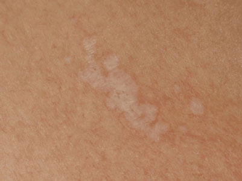

Lichen sclerosus is a relatively uncommon condition in which thin white crinkly patches appear on the skin. It can appear anywhere, but is most troublesome in the genital areas.

Rarely lichen sclerosus can occur in relatives.
No treatment is sure to reverse the changes of lichen sclerosus completely, but the symptoms and signs of the disease can usually be well controlled with a steroid application.